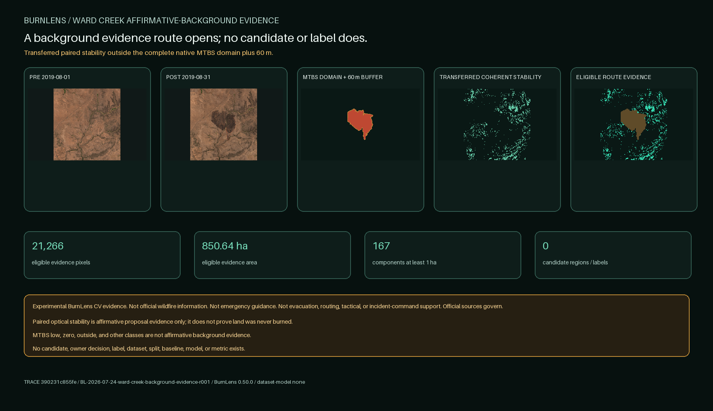

BURNLENS / PHASE TWO / ISSUE #554 / U04
A Ward Creek background evidence route opens; no candidate or label does.

Exact optical products
| Role | Product | Sensing time | Baseline |
|---|---|---|---|
| ward-creek-2019-pre | S2A_MSIL2A_20190801T185921_N0500_R013_T10TFQ_20230707T221135.SAFE | 2019-08-01T19:12:11.014978Z | 05.00 |
| ward-creek-2019-post | S2A_MSIL2A_20190831T185921_N0500_R013_T10TFQ_20230528T200015.SAFE | 2019-08-31T19:12:07.040104Z | 05.00 |
Conjunctive evidence rule
Eligible exact pre/post pixels; the frozen four-signal near-zero stability screen transferred without tuning; at least seven stable neighbors of nine; outside the complete native MTBS class 1-6 domain plus 60 meters. No signal is sufficient alone.
No threshold, support count, buffer, component threshold, or tie-break was searched against Ward Creek. This unit selects no component and creates no proposal.
Outside-domain status, low change, SCL, or apparent stability is insufficient alone. No MTBS class is affirmative background truth.
Gate result
ACCEPT_WARD_CREEK_AFFIRMATIVE_BACKGROUND_ROUTE_DEFER_CANDIDATES_LABELS_DATASET_MODEL
U05 may separately propose exactly one burned and one background core with unknown rings. This report creates neither.
Contains modified Copernicus Sentinel data 2019, accessed through CDSE; Monitoring Trends in Burn Severity Project (U.S. Geological Survey and USDA Forest Service).
No ground truth, field validation, official unburned map, owner response, dataset, split, baseline, model, metric, accuracy, endorsement, operational readiness, or emergency suitability exists.
Trace: commit 390231c855fe27f09f1062db847e51f3f99a4e2b · BurnLens 0.50.0 · run BL-2026-07-24-ward-creek-background-evidence-r001 · label schema burn-scar-binary-region-label-schema-v0.3.0 · dataset/model none.